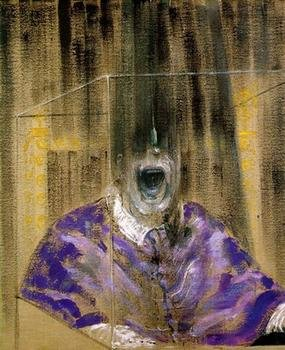

Head VI
Francis Bacon · 1949 · Oil on canvas · Arts Council Collection, Hayward Gallery, London
In copyright. Look and learn: shown for study, not for download.
This is the last of the six panels in Bacon's 1949 Head series, and the first of his paintings to refer to Velázquez's portrait of Pope Innocent X. The idea for the series came after he returned penniless, late in 1948, from a stay in Tangier. The panel was first shown in November 1949 at the Hanover Gallery in London, in an exhibition organised by Erica Brausen. The Arts Council acquired it in 1952.